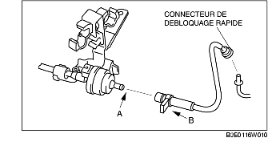

DEPOSE/REPOSE D'ELECTROVANNE DE PURGE [LF]
B3E011618740W01
1. Déposer la plaque de trou de bougie.
2. Déposer le couvercle de la batterie. (voir la section DEPOSE/REPOSE DE BATTERIE [LF].)
3. Débrancher le câble négatif de la batterie.
4. Déposer en fonction de la procédure suivante :
-
Attention
-
• Ne pas débrancher l'électrovanne de purge et le flexible d'évaporation, excepté lors du remplacement d'électrovanne de purge du fait qu'elle peut provoquer des fuites de gaz d'évaporation. Lorsqu'il est nécessaire de déposer l'électrovanne de purge pour la dépose/repose d'autres pièces, débrancher l'électrovanne au niveau du connecteur de déblocage rapide.
-
(1) Débrancher le flexible d'évaporation du côté absorbeur de vapeurs de carburant. (voir la section Note sur la repose du flexible d'évaporation.)

-
(2) Retirer le tube à dépression du collecteur d'admission.

5. Pour la repose, suivre l'ordre inverse de la dépose.
Note sur la repose du flexible d'évaporation
1. Reposer le flexible d'évaporation et le collier comme indiqué dans l'illustration.